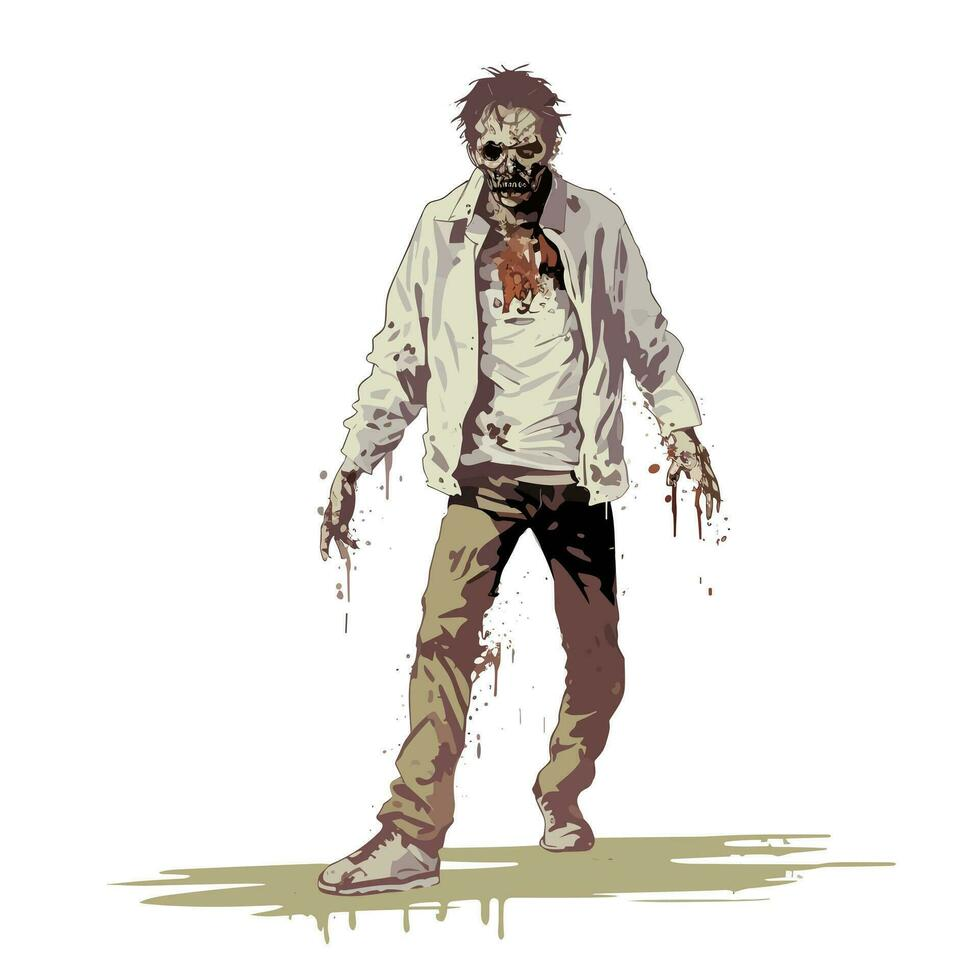
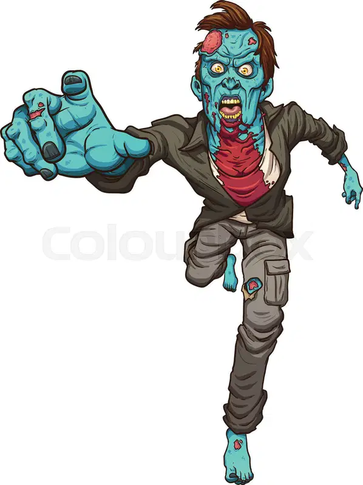

Este tipo de zombie es el que camina para ir a por nosotros.

Cuando un animal se convierte en zombie es llamado Animal Zombie.
Los runner zombies son los zombies que son capaces de ir corriendo a por ti.

Los crawler zombies se arrastran por el suelo para cazar a sus víctimas.